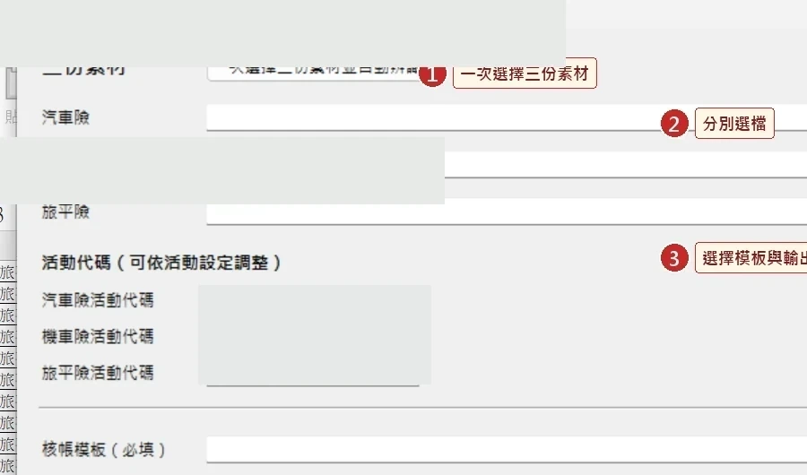
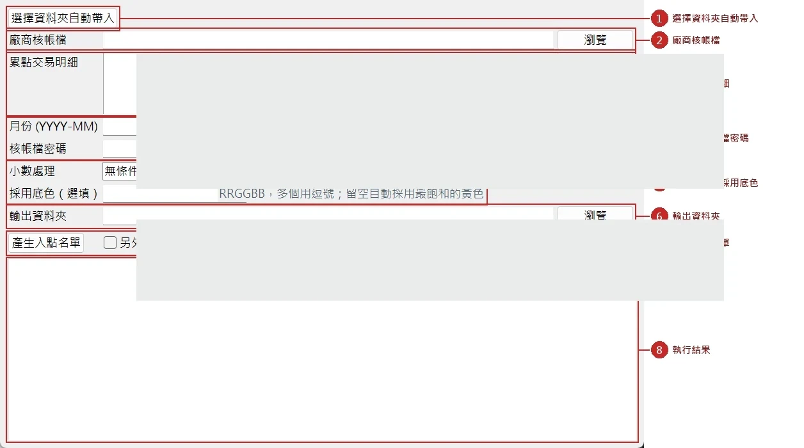
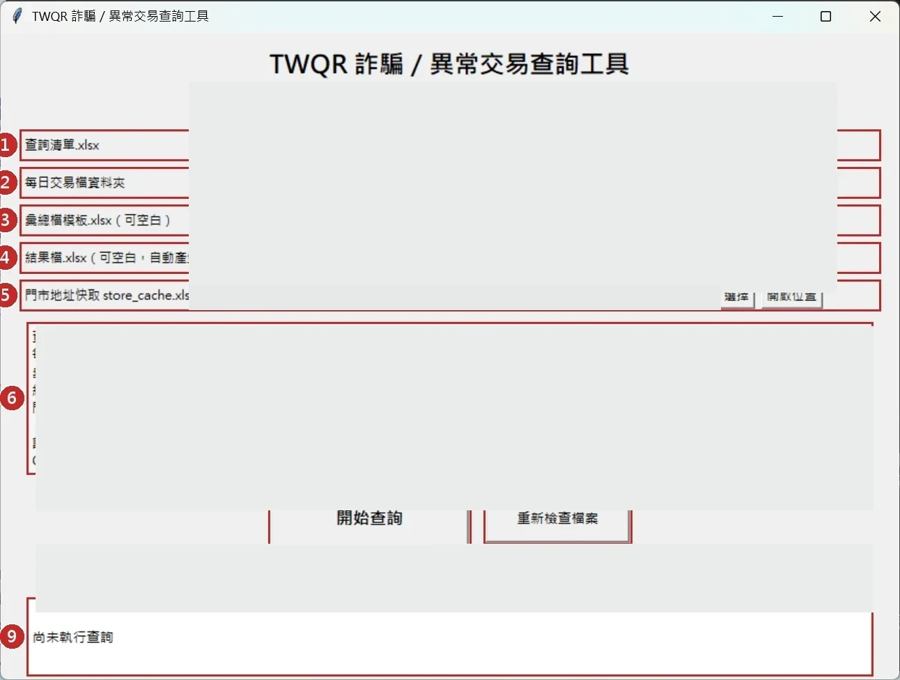
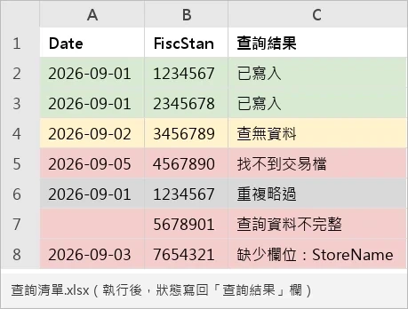

問題與限制
業務日常需要反覆核對多份資料、整理入點名單，以及依交易條件查找銀行協查資訊，過程繁瑣且需人工確認。
承接原承辦人的核帳、入點與交易協查業務後，將反覆的 Excel 操作整理成規則，配合公司 AI 應用方向協作開發 Python／Windows 工具；先以模擬資料與人工比對驗證，再投入日常使用。
讓使用者直接整理核帳資料、產製入點名單及查詢交易資料；保留人工覆核後，再由人員依既有管道提交，不自動傳送至外部系統。
開啟多份 Excel／交易檔案、查找相同欄位、人工整理及核對結果。
使用者選擇檔案與條件、由工具處理並產出結果，覆核後人工提交。
改善方式為實際作業描述；未進行量化量測，因此不宣稱節省特定百分比或工時。
業務日常需要反覆核對多份資料、整理入點名單，以及依交易條件查找銀行協查資訊，過程繁瑣且需人工確認。
以業務實際需要為起點，拆解處理規則，運用 Python 與 AI 協作製作三套 GUI 工具，並提供內部同事使用。
將資料匯入、比對、去重、錯誤提示與結果輸出工具化；因資料品質與內部風險控管，保留人工覆核與人工對外提交。
三套工具已用於內部日常作業。可以展示真實 GUI 和示範資料；沒有量測過的節省工時數字。
實際使用不代表自動串接外部機構，也不是交易詐欺偵測系統；所有對外資料仍由人員覆核後提交。
需依不同資料格式，逐筆核對或搜尋並整理成可用名單與協查結果。
將匯入、資料比對、重複檢查、異常提示及輸出改成內部同仁可操作的 GUI 流程。
產出資料先由人員確認，之後由人員透過原有管道提供外部窗口；工具沒有自動送出功能。
工具已於內部使用，但未取得可公開的節省時間、錯誤率或使用人次數據，因此不宣稱量化效益。
視覺為作品集重繪概念圖，不含真實交易資料、內部路徑、業務檔案或系統憑證。
原承辦人員調整職務後，我承接了核帳、入點和交易協查等既有業務。過程中發現大量時間花在查找日報表、人工比對與 Excel 名單整理，因此配合公司推動 AI 應用的方向，主動將可規則化的步驟做成小工具。
由我定義資料來源、欄位、重複判斷、輸入輸出與例外條件，使用生成式 AI 協助 Python 程式撰寫及除錯；開發後先以模擬資料測試，再與人工處理結果交叉比對，確認符合業務規則後才投入使用。
將每月多類別交易明細依業務規則分組、判斷重複、排序及彙整，輸出核帳檔與排除清單。保留原始資料，另存結果供人工確認及後續作業。
Python · openpyxl · Windows Excel automation · GUI依已確認的核帳檔標記回查交易明細，以訂單及必要的替代條件配對會員識別碼與點數，產出匯入名單，降低人工複製時的配對錯位風險。
Python · Excel processing · Tkinter GUI銀行、電子支付等外部窗口提出交易協查後，先將待查交易整理成 Excel；工具依交易日期及識別欄位，比對既有系統每天產出的超商收單交易明細，輸出對應門市代號、門市名稱等整理結果，再供人工確認與回覆。此工具不進行詐騙認定。
Batch lookup · Existing daily files · Excel export從使用者的 Excel、資料來源、檔案格式與操作順序整理需求。
定義欄位對應、查詢及比對條件，考量重複與異常資料。
配合公司鼓勵運用 AI 的方向，由生成式 AI 協助產生與修改程式；我負責流程規則、測試和實際作業確認，不將規則型查詢工具誤稱為 AI 模型。
所有小工具在使用前先以假資料或歷史案例測試，並透過人工計算或逐筆比對檢查輸出，確認結果後才在自己負責的業務中使用。
核帳、入點及交易協查查詢工具已應用於本人負責的日常業務，減少原本人工逐筆尋找、比對及整理檔案的步驟。公開成果不使用未實測的效率百分比，亦不宣稱全面導入部門。
以下圖片擷取自實際 Python 工具與操作手冊，並使用示範資料；內部檔名、路徑與部分識別欄位已遮蔽。這些不是重新繪製的 Mockup。




內部操作 GUI
資料檢核、異常標記
檢查結果及疑義
沿用既有作業程序
考量內外部系統存取權限、資安及風控條件，工具不直接介接外部系統，也不具備自動發送／提交功能。
公司內部人員已使用三套工具執行資料產出，對外提交仍由人員檢核並負責；不宣稱未量測的改善百分比。